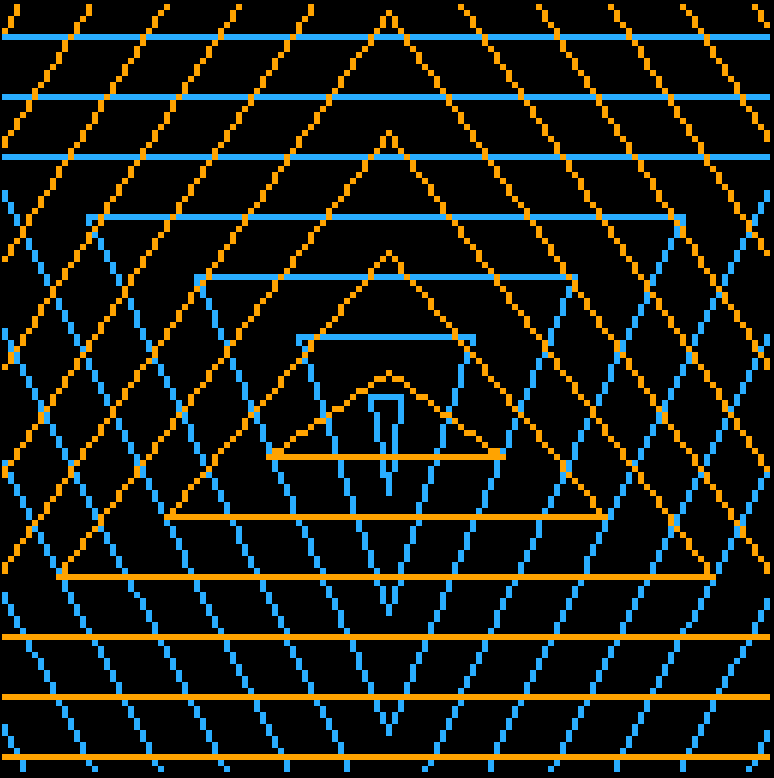
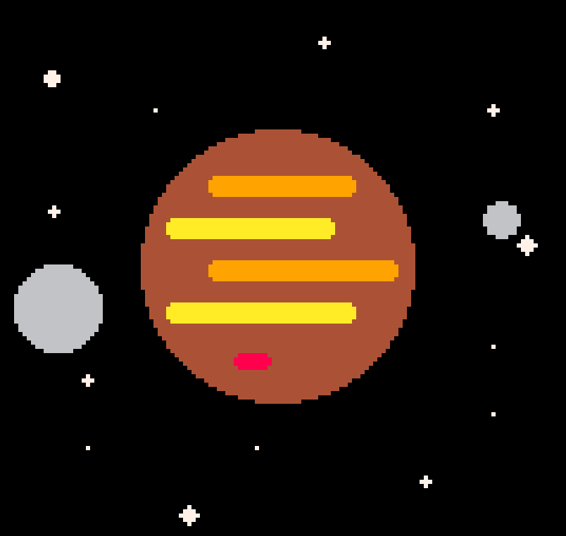

Pico-8
Pico-8 is a cool fantasy console where you can make your own games or visual programs easily. Here are some of the better programs I've made, and you can even play them in browser! If you want to see more of my Pico-8 projects, you can visit my profile page on the Pico-8 BBS here.

Icosahedron
I made this in an attempt to understand how 3D graphics are made. You can rotate the shape and zoom in and out.

Triangles
This was made as a 'Tweetcart' for Twitter, where you try to make a Pico-8 program fit into the size of a tweet.


Jupiter
I think this was the very first Pico-8 program I wrote. It is simply an animation of two moons orbiting around Jupiter.

Spirals
This was based off a gif I saw online. You can change the speed of the smaller rotations to get different patterns.